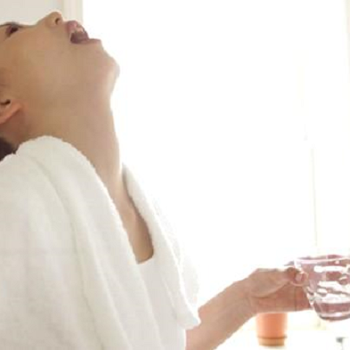
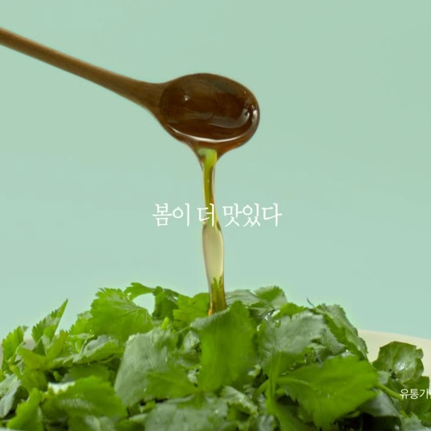
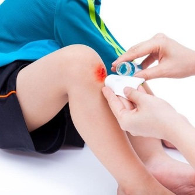

피클국물의 다양한 효능, 지금 알아보세요.

구강 청결 유지
곧 MT를 갈 당신, 썸타고 있는 당신. 혹시 모를 사건(?)에 대비는 해놨나요?
피클국물을 입 안에 머금고 헹궈보세요. 입냄새는 물론 구강 건강까지 해결해줍니다.
위장 보호
우리 회사 회식, 무한으로 마시기 전에 피클국물 한 잔으로 위장을 보호해주세요.
피클국물이 위벽을 코팅해주어 위장 자극을 최대한 줄여줍니다.

요리 조미료
요리를 처음하는 당신! 음식은 망칠것 같은데 인공조미료는 꺼려지신다구요?
피클국물 몇 방울을 섞어주세요! 감칠맛이 확 살아납니다.

상처 치료
우리 아이 무릎 상처, 피부병이 걱정된다면! 피클국물로 세안해보세요.
흉터는 가라앉고 편안함은 오래갑니다.
▼ 더 많은 효능은 아래 동영상에서 알아보세요. ▼